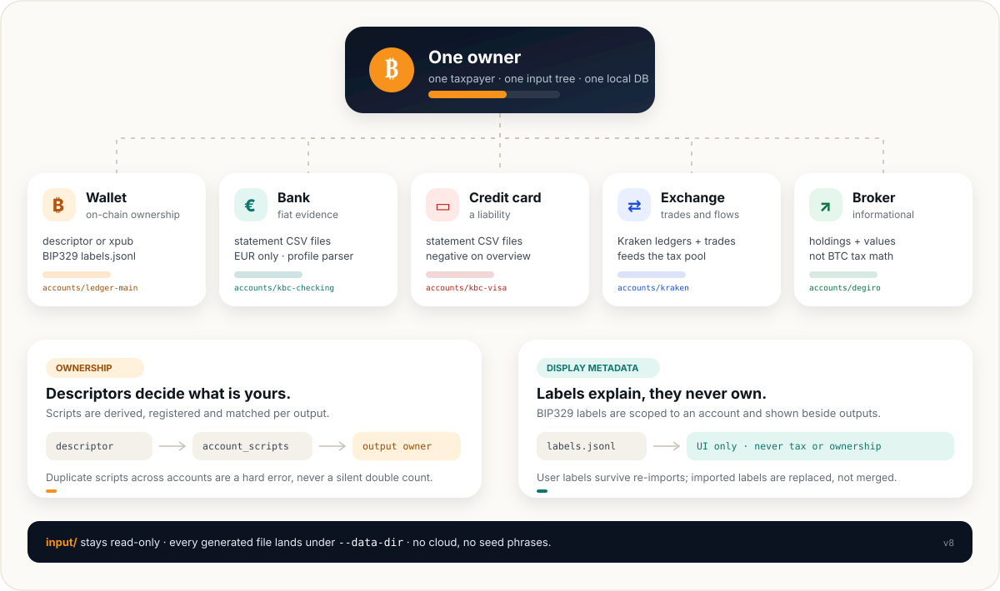
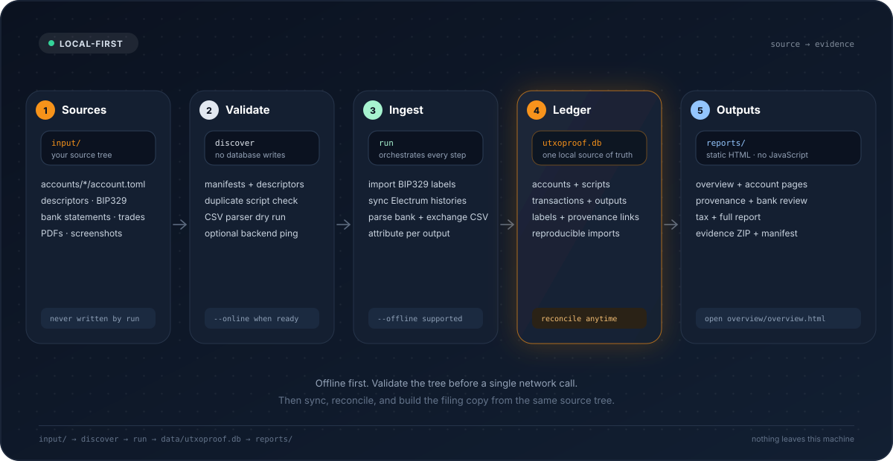
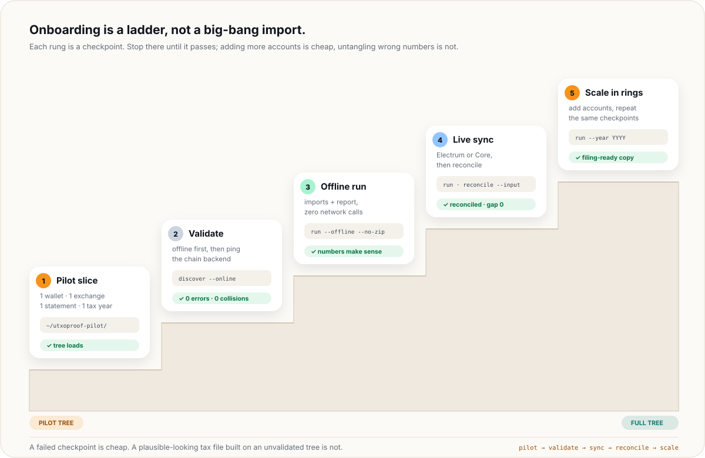
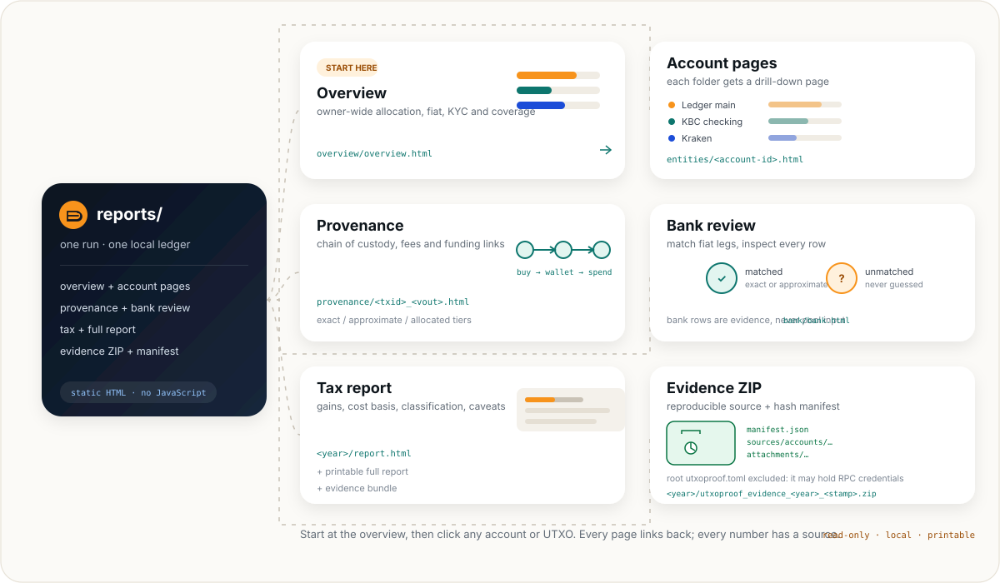

One owner. Many accounts. One ledger.
utxoproof is not a wallet and it is not a bank. It is a local reconciliation tool: you describe one taxpayer and the places value lived, and it builds a reproducible graph from those sources.

One owner
One taxpayer per input tree. A spouse or a separate entity gets its own tree and data directory, never a mixed ledger.
Descriptors own
Exported descriptors derive the scripts. Ownership is attributed per output, not per transaction and never by label.
Sources stay put
Account folders contain manifests and source files. The database, imports, reports and evidence bundle are generated elsewhere.
Everything is static
Reports are plain HTML with inline SVG charts. No JavaScript, no cloud dependency, no analytics. Archive them as-is.
Never put utxoproof.db, imports/, reports/ or evidence/ inside input/. The runner refuses a data directory nested inside the input tree, because generated files must never become source files.
Take inventory before you touch the tool.
With a lot of data, the dangerous move is opening every export at once. First sort what you have into three piles: chain ownership, fiat/trade evidence, and human evidence. Then map each pile to one account kind.
Chain ownership
Descriptors, xpubs and BIP329 labels. This is the only pile that establishes which on-chain outputs are yours.
Fiat & trades
Bank statements, card statements, Kraken, Bisq, manual exchange events and broker holdings. These explain the euros around the BTC.
Human evidence
Withdrawal confirmations, emails, scans and screenshots. Attach them after the DB exists; originals stay untouched.
| What you have | Goes into | Account kind | Watch out for |
|---|---|---|---|
| Exported descriptor or xpub | accounts/<id>/receive.txt and change.txt | wallet | Watch-only only. One folder per descriptor set; duplicate scripts across folders are a hard error. |
| BIP329 labels | accounts/<id>/labels.jsonl | wallet | Labels are display metadata. They never create ownership, tags or tax treatment. |
| Kraken ledgers + trades | ledgers.csv and trades.csv | exchange | Keep both files and all years. |
| Bisq trade history + transfers | tradeHistory.csv and transactions.csv | exchange | Non-KYC P2P. EUR and BTC-quoted crypto markets are supported; keep the SEPA receipt PDFs too. |
| Old exchange with no CSV | events.csv + evidence/ | exchange | Hand-enter each buy/sell/deposit/withdrawal. List the email or PDF that proves it. |
| Bank statement CSV | accounts/<id>/statements/**/*.csv | bank | EUR only. A profile parser is required; a balance alone is not a bank account. |
| Credit-card statement | accounts/<id>/statements/**/*.csv | credit_card | A card is a liability. Put the owed balance in as a negative amount. |
| Broker holdings | account.toml → [[holdings]] | broker | Informational only. It never enters BTC tax math. |
| PDFs, scans, emails | utxoproof attach after the DB exists | evidence | Originals are copied and hashed; re-attaching identical content is a no-op. |
| Coinbase / Binance | Legacy import → manual.csv | legacy path | Convert with utxoproof import and use the report path until a v8 exchange adapter lands. |
No seed phrases. No private keys. No exchange passwords or API secrets. utxoproof only needs watch-only public keys, addresses and statements. A descriptor is still sensitive — it reveals your addresses — but it cannot spend your coins.
Write the inventory down
Make a simple text note before creating folders. For each account, write the id, kind, what source file is authoritative, and which years it covers. This takes ten minutes and saves hours when a parser disagrees with a statement.
# inventory.txt — keep it next to your own notes, not inside input/
ledger-main wallet Sparrow export, 2019–2025
sparrow-savings wallet Sparrow export, 2021–2025
kbc-checking bank KBC CSV statements, 2018–2025
kbc-visa credit_card KBC card statements, 2018–2025
kraken exchange Kraken ledgers + trades, 2018–2025
degiro broker holdings screenshot, as of 2025-12-31
The ids above are examples. Use stable, lowercase, URL-safe ids; they become page URLs and account references in reports.
Create a workspace that cannot contaminate itself.
Keep the code checkout, the source data and the generated output mentally separate. In practice, one data root can hold both input/ and generated output, as long as the generated files are never inside input/.

~/utxoproof-data/ # one root, outside the git checkout ├── input/ # source of truth — back this up │ ├── utxoproof.toml │ └── accounts/ │ ├── ledger-main/ │ │ ├── account.toml │ │ ├── receive.txt │ │ ├── change.txt │ │ └── labels.jsonl │ ├── kbc-checking/ │ │ ├── account.toml │ │ └── statements/2023/*.csv │ ├── kraken/ │ │ ├── account.toml │ │ ├── ledgers.csv │ │ └── trades.csv │ └── degiro/ │ └── account.toml ├── utxoproof.db # generated, reproducible ├── imports/ # generated intermediates ├── reports/ # static HTML dashboard + tax report └── evidence/ # attachments — back this up too
Pick a fresh data root
Do not point your first real run at an old v7 database or a folder full of experiments. A new folder makes rollback trivial: delete it and start again.
$ export UTXOPROOF_DATA_DIR=~/utxoproof-data $ mkdir -p "$UTXOPROOF_DATA_DIR/input/accounts"
Copy and edit the config
Start from the shipped example. Review the owner, chain backend, reporting year and communal surcharge rate before importing data.
$ cp utxoproof.example.toml "$UTXOPROOF_DATA_DIR/input/utxoproof.toml" $ $EDITOR "$UTXOPROOF_DATA_DIR/input/utxoproof.toml"
Set the minimum that matters
Everything else has a default. These four blocks are the ones that change real output.
[owner] name = "Your name" [chain] backend = "electrum" network = "mainnet" electrum_url = "ssl://127.0.0.1:50002" electrum_ca_file = "" [reporting] tax_year = "2023" # or leave empty and use --year [taxpayer] communal_surcharge_rate = 0.07 # Brussels 0.0587 · Ghent 0.076 · Antwerp 0.08
Privacy default
Use a self-hosted Electrum server you trust. A public server sees every address your wallet queries. The public smoke test is for the spec-vector demo only, not your real xpub.
Backups are not optional
The DB can be rebuilt from input. The attachments under data/evidence/ cannot. Back up input/ and evidence/ encrypted, and test a restore once.
Treat it as a separate archive. Build the v8 tree next to it and leave the old data directory untouched until the new report reconciles. Do not migrate by copying a DB into input/.
Build the owner map, one folder at a time.
Each folder under input/accounts/ is one account. The folder name is the default id; the manifest inside is the source of truth. There is no central account list to keep in sync.
wallet
On-chain ownership. Needs a descriptor pair or an xpub shorthand plus fingerprint.
bank
EUR statements and an optional hand-asserted balance. Statement rows are evidence, never tax pool input.
credit_card
Same statement shape as a bank, but treated as a negative liability in the overview.
exchange
Kraken ledgers and trades. Feeds the manual CSV that drives the v8 tax report.
broker
Holdings and values for the overview. Informational only; no Belgian stock tax logic yet.
Use a stable id such as ledger-main, kraken, kbc-checking. Avoid spaces, dates and wallet1. The id appears in URLs and report references; renaming later is possible but creates a new account identity.
Four manifests to copy
Wallet — descriptor files
Best for multisig and for Sparrow exports that include both chains. The loader auto-detects receive.txt.
# accounts/ledger-main/account.toml
kind = "wallet"
label = "Ledger main"
network = "mainnet"
gap_limit = 200
descriptor_receive_file = "receive.txt"
descriptor_change_file = "change.txt"
labels_file = "labels.jsonl"
tags = ["cold-storage"]
Wallet — xpub shorthand
Fine for simple single-sig. The fingerprint is required; purpose defaults to 84 (BIP84).
# accounts/sparrow-savings/account.toml
kind = "wallet"
label = "Sparrow savings"
network = "mainnet"
xpub = "zpub..."
fingerprint = "73c5da0a"
purpose = 84
gap_limit = 200
Bank and credit card
Statements are auto-discovered under statements/. The balance is an assertion with a date, not a computed number.
# accounts/kbc-checking/account.toml
kind = "bank"
label = "KBC checking"
profile = "kbc-bankaccount"
currency = "EUR"
[[balances]]
amount_eur = "12500.00"
as_of = "2023-12-31"
note = "Closing balance"
Exchange and broker
Kraken needs both files. Broker holdings stay informational.
# accounts/kraken/account.toml kind = "exchange" label = "Kraken" exchange = "kraken" ledgers = ["ledgers.csv"] trades = ["trades.csv"] # accounts/degiro/account.toml kind = "broker" label = "DEGIRO" [[holdings]] symbol = "IWDA" quantity = "25" value_eur = "2125.00"
The id = "..." key can override the folder name. Use it only when the folder name cannot be stable. Tags are optional and inherited by every holding of that account.
Load the chain side: descriptors, not addresses.
A list of addresses is not an ownership model. Export the wallet descriptor from Sparrow, Bitcoin Core or your signer, and let utxoproof derive and register every script for the account.
What to export
- Single-sig: the account xpub plus its master fingerprint and purpose, or the full descriptor.
- Multisig: both receive and change descriptors, including all cosigner xpubs and the checksum.
- Multipath: a single descriptor pair using
<0;1>is accepted; explicit receive/change files are clearer. - One folder per descriptor set. Two BIP84 accounts from the same seed are two wallets, not one.
What to check before syncing
- The network is
mainnet(or the matching testnet). - The descriptor includes the origin fingerprint and path.
- Receive and change descriptors belong to the same wallet.
- No other account derives the same scripts. Duplicate scripts are a hard error, never a silent double count.
Never private keys
Export the watch-only output descriptor. If the export includes an xprv, stop and re-export. utxoproof never needs spending authority.
Labels are not ownership
BIP329 labels are imported and displayed. They do not turn an address into yours, and they never change tax treatment. Ownership comes from the derived script registry.
Connect Electrum
Electrum is the primary chain backend. Bitcoin Core remains optional for diagnosis or fallback. Put the endpoint in input/utxoproof.toml:
[chain]
backend = "electrum"
network = "mainnet"
electrum_url = "ssl://127.0.0.1:50002"
electrum_ca_file = "" # path to your server's CA, if private
The importer batches scripthash histories and extends the gap limit as activity reaches the edge. If the first sync misses history, or you changed descriptors, rerun with --force-rescan. It clears and rebuilds the local chain tables; it does not touch your source files.
BIP329 labels
Put a Sparrow/Electrum labels.jsonl in the wallet folder. Supported label types are tx, addr, output and input. Imported labels are replaced on re-import; user labels survive. A label is shown beside the output in account and provenance pages — that is all it does.
$ utxoproof label --account ledger-main --type output \
--ref <txid>:0 --label "cold storage"
Load the fiat side without confusing evidence with tax input.
Banks, cards, exchanges and brokers each tell a different part of the story. The most important distinction: bank rows are evidence for fiat-leg review, while exchange trades feed the BTC cost-basis pool.
Bank and credit-card accounts
Put statement CSVs under the account folder and set the matching profile. The default pattern is statements/**/*.csv; you can set statements explicitly if your export layout differs.
Bank
# accounts/kbc-checking/account.toml
kind = "bank"
label = "KBC checking"
profile = "kbc-bankaccount"
currency = "EUR"
[[balances]]
amount_eur = "12500.00"
as_of = "2023-12-31"
note = "Closing balance"
Credit card
# accounts/kbc-visa/account.toml kind = "credit_card" label = "KBC Visa" profile = "kbc-creditcard" currency = "EUR" [[balances]] amount_eur = "-420.00" # owed, not an asset as_of = "2023-12-31"
A statement can prove flows without giving an opening balance. Use [[balances]] only when you have a dated figure; put the source in note. The overview labels a hand-asserted figure as such. Bank rows never enter the BTC pool.
The current bank profiles cover common Belgian exports, including KBC bank and card. Other shapes are best-effort: inspect the first converted rows in the bank review page before trusting a full year. Non-EUR rows without a rate abort the parse rather than guessing.
Kraken: two files, one account
Export ledgers.csv and trades.csv for the full period and keep them together. The ledger records movements; the trades file supplies execution prices and margin flags. The runner merges them into imports/manual.csv and the tax report.
# accounts/kraken/account.toml
kind = "exchange"
label = "Kraken"
exchange = "kraken"
ledgers = ["ledgers.csv"]
trades = ["trades.csv"]
Bisq: trades, transfers and SEPA receipts
Export tradeHistory.csv and transactions.csv from Bisq and put them in the account folder. Bisq is non-KYC by default. EUR markets use the stated EUR/BTC price; XMR/BTC and ETH/BTC trades are valued at the bundled BTC/EUR daily close because only the BTC leg enters the Bitcoin pool. A bare Buy/Sell on a crypto market is read from the altcoin side; set crypto_direction = "btc" if your export uses the BTC side.
# accounts/bisq/account.toml
kind = "exchange"
label = "Bisq"
exchange = "bisq"
trade_history = "tradeHistory.csv"
transactions = "transactions.csv"
receipts = "receipts/*.pdf"
SEPA receipt PDFs are matched to trades and bank rows by filename (date, BTC amount, EUR/BTC price, market). The PDF stays evidence; no text extraction is attempted. Every trade, transfer and receipt appears on the exchange review page, with the bank row and chain transaction it links to. Unmatched items are red and listed in a review panel — never guessed.
An old exchange with no CSV
When the exchange is gone and only confirmation emails remain, hand-write events.csv. Each row is one BUY, SELL, DEPOSIT or WITHDRAWAL. The evidence column is a semicolon-separated list of files relative to the account folder; the runner checks that every file exists and includes the account folder in the evidence ZIP.
# accounts/old-exchange/account.toml kind = "exchange" label = "Old exchange (manual)" exchange = "manual" events = "events.csv" # events.csv date,kind,btc,eur_per_btc,fee_eur,refid,note,evidence,txid,address,kyc_status 2017-11-20,BUY,0.25,6000.00,12.50,old-buy-1,"Purchase email",evidence/2017-11-20_purchase.eml,,,kyc 2018-01-15,WITHDRAWAL,0.25,0,5.00,old-wd-1,"Withdrawal email",evidence/2018-01-15_withdrawal.eml,<txid>,<address>,kyc
BUY and SELL enter the moving-average pool. DEPOSIT and WITHDRAWAL move coins and proportional basis without creating a taxable disposal. Bank rows and receipts corroborate the euro side; they never enter the cost pool.
Broker accounts are informational
Broker holdings show up in the owner overview so the picture is complete. They do not enter BTC cost basis, disposal math, KYC propagation or the Belgian Bitcoin classifier. Belgian stock-tax rules are not implemented; keep broker statements as evidence and treat the page as a reminder, not a tax calculation.
Validate the tree before you sync.
discover reads every manifest, derives scripts, parses statements and labels, checks for duplicate ownership, and writes nothing. This is where you want to find the typo — not after a two-hour sync.
Offline discovery
No database, no network. It reports accounts, warnings and hard errors.
$ utxoproof discover --input ~/utxoproof-data/input
Machine-readable discovery
Useful when you want to script a check or diff the account list between iterations.
$ utxoproof discover --input ~/utxoproof-data/input --json
Only then ping the backend
--online checks that the configured Electrum or Core endpoint is reachable. It does not replace the offline checks.
$ utxoproof discover --input ~/utxoproof-data/input --online
Inspect the run plan
A plan names every selected step and changes nothing. If a step is unexpectedly skipped, fix the tree or the flags before running.
$ utxoproof run --input ~/utxoproof-data/input \
--data-dir ~/utxoproof-data --plan
Stop rules
| If discover says… | It usually means | Do this |
|---|---|---|
derive the same script | The same xpub or descriptor is in two account folders. | Remove the duplicate account. Never let two folders claim the same output. |
descriptor/derivation error | The descriptor is truncated, has a bad checksum, or the network is wrong. | Re-export from the wallet. Do not hand-edit the checksum. |
no statement CSV files matched | The bank/card folder has no CSV under its statement pattern. | Add the statements or set statements explicitly. |
wallet needs descriptors or xpub | The wallet manifest has no ownership source. | Export the watch-only descriptor or add xpub + fingerprint. |
exchange must be one of kraken, bisq, manual | An unsupported exchange manifest. | Use the legacy import path for that source, or wait for a v8 adapter. |
manual-event evidence file not found | An events.csv row names a file that is not in the account folder. | Fix the relative path. Evidence links that point nowhere are rejected. |
receipt filename is missing… | A PDF under receipts/ is not a Bisq SEPA receipt name. | Keep the original Bisq filename, or move unrelated PDFs out of the receipts folder. |
Offline discovery has zero errors, --online reaches the backend, and the plan lists the steps you expect. Now you are allowed to touch the network.
Pilot one slice. Then scale in rings.
The high-volume failure mode is a big-bang import: ten wallets, eight years and five statement formats at once. Build one slice that exercises each code path, prove it end to end, and only then add the rest.

Pilot slice
One wallet, one exchange, one bank statement, one tax year. Enough to exercise sync, import, report, bank matching and evidence.
Acceptance
Offline report looks sane, live sync reconciles to zero, and the tax totals match your own arithmetic for that year.
Build the pilot tree separately
Copy one wallet folder, one exchange folder and one bank folder into a fresh root. Point UTXOPROOF_DATA_DIR at a pilot folder so experiments never touch the filing DB.
$ export UTXOPROOF_DATA_DIR=~/utxoproof-pilot $ mkdir -p "$UTXOPROOF_DATA_DIR/input/accounts"
Prove the imports offline
No chain sync, no evidence ZIP. Inspect imports/manual.csv, the bank review and the tax report. This catches parser surprises before the network.
$ utxoproof discover --input "$UTXOPROOF_DATA_DIR/input" $ utxoproof run --input "$UTXOPROOF_DATA_DIR/input" \ --data-dir "$UTXOPROOF_DATA_DIR" --offline --no-zip
Add the chain, then reconcile
Point the config at your Electrum server, run the same tree without --offline, and reconcile every wallet before looking at tax numbers.
$ utxoproof discover --input "$UTXOPROOF_DATA_DIR/input" --online $ utxoproof run --input "$UTXOPROOF_DATA_DIR/input" \ --data-dir "$UTXOPROOF_DATA_DIR" --no-zip $ utxoproof reconcile --input "$UTXOPROOF_DATA_DIR/input" \ --db "$UTXOPROOF_DATA_DIR/utxoproof.db"
Scale by rings
Add one wallet or one source at a time, rerun, and repeat the same checks. Keep the data dir; the input tree is the source of truth, so adding an account never requires rebuilding the world.
$ utxoproof run --input "$UTXOPROOF_DATA_DIR/input" \
--data-dir "$UTXOPROOF_DATA_DIR" --only labels,sync,portfolio
Stop and fix the source. Do not hand-edit imports/manual.csv or the generated bank rows; they are regenerated on every run. If a source format is unsupported, keep it as evidence and use the legacy path rather than inventing a manifest that lies about it.
The full run: one command, one data directory.
Once the tree validates and the pilot reconciles, run the real thing. The command is idempotent: it imports labels, syncs wallets, parses statements, builds the tax report and renders the account dashboard.
$ utxoproof discover --input ~/utxoproof-data/input --online $ utxoproof run --input ~/utxoproof-data/input \ --data-dir ~/utxoproof-data --year 2023
Use --no-zip while iterating; drop it for the run you intend to archive. Use --price or --as-of only when you deliberately want an override; otherwise the bundled daily price history is used offline.
What the run writes
| Path | What it is | Keep it? |
|---|---|---|
imports/manual.csv | Merged exchange trades in the neutral manual-CSV shape. | Regenerated; useful for diagnosis. |
imports/ledgers.csv / trades.csv | Merged Kraken sources, with duplicate refids rejected. | Regenerated. |
imports/bank-rows.csv | Parsed bank/card rows with source line references. | Regenerated; evidence is in the ZIP. |
utxoproof.db | Local SQLite graph: accounts, scripts, txs, outputs, labels, links. | Reproducible; back it up if convenient. |
reports/overview/overview.html | Owner-wide dashboard: allocation, fiat, KYC, coverage. | Yes, it is the entry point. |
reports/entities/*.html | One page per account with balances, UTXOs, labels and links. | Yes, part of the archive. |
reports/provenance/*.html | Per-UTXO saga: funding, fees, bank/exchange links, attachments. | Yes. |
reports/bank/bank.html | Fiat-leg matching: exact, approximate and unmatched rows. | Yes, review it. |
reports/<year>/report.html | Tax report with gains, classification and caveats. | Yes, the filing artifact. |
reports/<year>/fullreport.html | Printable report combining every section. | Yes, for the archive. |
reports/<year>/utxoproof_evidence_<year>_<stamp>.zip | Source files, intermediates, attachments, report and hash manifest. | Yes, the audit bundle. |
Many years
Use the same DB and run --year one year at a time. Keep each year's report and ZIP. The account and overview pages are refreshed on each run; the database stays cumulative.
Partial reruns
--only labels,sync,exchanges,banks,report,portfolio selects steps. After adding one wallet: --only labels,sync,portfolio. After changing a statement: --only banks,portfolio.
Do not run two utxoproof commands against the same data directory concurrently. SQLite and the generated reports are not designed for parallel writers. Sequential runs are the safe path.
Reconcile, review, and only then file.
A report is not done because it renders. It is done when the on-chain balances reconcile to the server and the numbers agree with your own arithmetic for the year.
$ utxoproof reconcile --input ~/utxoproof-data/input \
--db ~/utxoproof-data/utxoproof.db
The expected result is RECONCILED (gap 0). A nonzero gap means stop. Rerun sync, then --force-rescan, then check that the descriptor, network and Electrum endpoint all match the wallet. Reconcile compares DB-owned unspent outputs against the server's scripthash balances, so a silent missed spend shows up here.

The previews below open the synthetic demo, not real holdings. They show the shape of each page; your text and figures will differ.
Overview
Allocation, fiat, KYC and coverage across every account.
Open demo →Account page
Balances, UTXOs, labels and a link to every provenance saga.
Open demo →Bank review
Matched and unmatched fiat legs, with the source row kept.
Open demo →Exchange review
Bisq trades, SEPA receipts and the bank rows that corroborate them.
Open demo →Tax report
Gains, cost basis, classification and the caveats that matter.
Open demo →Evidence: the part a reviewer opens
The year ZIP contains the account-folder sources, merged intermediates, attachments, the report and a hash manifest. The root input/utxoproof.toml is deliberately excluded because it may contain RPC credentials. Open the ZIP once yourself, verify manifest.json, and check that the source paths are the ones you expect.
$ utxoproof attach --file ~/withdrawal-mail.png \ --tx <txid> --note "Kraken withdrawal confirmation" --year 2023 $ utxoproof attach --file ~/annual-statement.pdf \ --note "Bank 2023 totals"
Attachments are content-hashed and stored under data/evidence/; originals stay untouched. Re-attaching identical content is a no-op. This is also why evidence/ belongs in your backup, while the DB can be rebuilt.
Scaling playbook for a lot of data.
The tool is built for one owner with many accounts and many years. These are the habits that keep a large archive reproducible instead of fragile.
Many wallets: one folder per descriptor set
Add a wallet, run --only labels,sync,portfolio, reconcile, then add the next. Do not paste the same xpub into two folders to “see it twice”; that is a hard error. If a seed has multiple BIP84 accounts, each account gets its own folder.
Many years: one cumulative DB
Keep the DB and run one tax year at a time. The report year changes; the graph does not. Archive each year's report.html, fullreport.html and evidence ZIP together.
Many statements: let the folder discover
Keep statements under the account's statements/ tree, ideally by year. The default glob is recursive and deterministic. If you use explicit patterns, list them in statements and rerun discovery.
Privacy: self-host the chain backend
A public Electrum server sees every address you query. Use a server you control, or one you trust. The public smoke test uses a deliberately public spec-vector xpub; never point it at your real wallet.
Backup: input + evidence, not just the DB
The SQLite graph is reproducible from the input tree. Attachments under data/evidence/ are not. Back up both, encrypt the archive, and test a restore before filing season.
Performance: offline iterate, online sync once
Use --offline --no-zip for report and parser iteration. Use the live run when you are ready to reconcile. Large wallet histories can take time; a local Electrum server is usually the biggest speed-up.
Ring 1: one wallet, one exchange, one statement, one year. Ring 2: all wallets for that year. Ring 3: all fiat sources and all years. Ring 4: attachments, full evidence bundle, archival backup. Do not start Ring 3 because Ring 1 rendered a page.
Honest limits, before you trust a number.
A good guide says what the tool does not do. These are current boundaries, not aspirations.
| Area | Current behaviour | What to do |
|---|---|---|
| Exchange folders | Kraken, Bisq and manual events in v8. Coinbase/Binance remain legacy imports. | Use utxoproof import and the legacy report path for Coinbase or Binance until an adapter lands. |
| Bisq receipts | Matching reads the deterministic PDF filename, not the PDF text. | Keep the original Bisq export filename. Unmatched receipts stay visible in red. |
| Bank statements | EUR only. Profiles are alias-driven and some shapes are best-effort. | Inspect the bank review for the first statement of each profile. Non-EUR rows without a rate abort rather than guess. |
| Broker holdings | Informational only; no Belgian stock tax. | Keep statements as evidence; do not treat the overview as a stock-tax report. |
| Ownership | Descriptors and derived scripts only; labels never own. | Export watch-only descriptors. Duplicate scripts across accounts are a hard error. |
| Tax classification | Heuristic scores plus your self-reported flags; not professional advice. | Review the classifier caveats in the report. Do not use a flag to “make the number nicer”. |
| Scope | One taxpayer per tree. No multi-owner consolidation, no custody, no trading. | Give each taxpayer their own input tree and data directory. Keep seeds and private keys out. |
| Balances | Partial statements cannot produce a balance. | Assert a dated balance only when you can point to its source. |
utxoproof produces reproducible calculations and evidence. It does not replace an accountant, a tax lawyer or your own review. The demo pages and this guide use synthetic data.
Troubleshooting the usual suspects.
| Symptom | Likely cause | Fix |
|---|---|---|
no valid accounts found | No accounts/*/account.toml under the input tree. | Check the path passed to --input; every account needs a manifest. |
missing account.toml | A folder exists but is not an account. | Add the manifest or move the folder out of accounts/. |
ignored invalid TOML line | A stray legacy/YAML line, duplicate key, or malformed optional list. | Comment it out or leave it: utxoproof skips it with a warning. Required fields still error. |
no statement CSV files matched | The bank/card folder has no CSV under the pattern. | Add statements or set statements explicitly; a bank folder without statements is invalid. |
wallet needs descriptors or xpub | No ownership source in the wallet manifest. | Export a watch-only descriptor, or add xpub + fingerprint + purpose. |
derive the same script | The same wallet is in two account folders. | Remove the duplicate. One output can have only one owner. |
| Zero UTXOs after sync | Wrong network, wrong descriptor, server not reachable, or history missed. | Run discover --online, check network, then run --force-rescan. |
| Reconcile shows a gap | Stale DB, missed spend, wrong server, or descriptor mismatch. | Rerun sync, then --force-rescan; inspect the account descriptor and server network. |
| Labels do not appear | Wrong file name, unsupported type, or account not imported. | Use labels.jsonl or set labels_file; remember labels are display only. |
| Bank rows do not change tax | By design: bank rows are evidence, not pool input. | Use exchange trades or a manual CSV for cost-basis flows. |
| Tax report has shortfalls | Missing buys or an opening position outside the imported history. | Run utxoproof check, find the gap, add the source. Never fabricate a buy to fill the pool. |
| Non-Kraken exchange fails | v8 exchange folders are Kraken-only. | Use utxoproof import --type ... and the legacy report path for now. |
| Pages demo is stale | The workflow did not run or Pages is not set to GitHub Actions. | Actions → “Demo reports” → re-run; check Pages source is GitHub Actions. |
What does --only actually skip?
The six steps are labels, sync, exchanges, banks, report and portfolio. Skipping sync keeps the existing chain graph. Skipping exchanges reuses the existing imports. Skipping report still renders the portfolio, and vice versa. A plan (--plan) shows exactly what is selected.
Why is my report year different from the file year?
The report year comes from --year, then [reporting].tax_year, then the latest year in the imported manual CSV. A manual override always wins. Use --year explicitly when producing a filing artifact so the filename and the tax year cannot drift.
Can I edit the generated manual CSV?
Do not make it your source of truth. imports/manual.csv is regenerated from account folders, so edits disappear on the next run. If the conversion is wrong, fix the exchange export mapping or use the legacy import path and keep the original as evidence.
The printable checklist.
Work top to bottom. Stop at any failed checkpoint. The goal is not to finish the archive today; it is to make the next run boring.
Workspace
Input tree
Validate, pilot, file
You do not need all your data to start.
You need one trustworthy slice: one wallet, one exchange, one statement, one year. Prove it, reconcile it, then let the archive grow without letting the story drift.